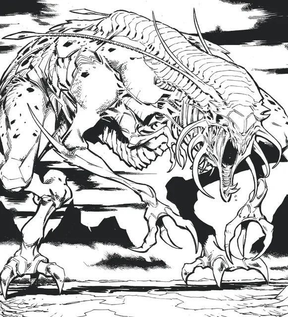

Ксилл
Xill
Средний Монстр, законно-злой

Класс Доспеха 16 (природный доспех)
Хиты 33 (6к8 + 6)
Скорость 40 футов
| мод | спас | ||
|---|---|---|---|
| СИЛ | 14 | +2 | +2 |
| ЛОВ | 18 | +4 | +4 |
| ТЕЛ | 13 | +1 | +1 |
| мод | спас | ||
|---|---|---|---|
| ИНТ | 11 | +0 | +0 |
| МДР | 14 | +2 | +2 |
| ХАР | 9 | −1 | −1 |
Навыки Акробатика +6, Атлетика +4, Восприятие +4
Чувства тёмное зрение 60 футов, пассивное Восприятие 14
Языки Общий
Опасность 3 (700 опыта)
Бонус мастерства +2
Особенности
Прогулка по эфиру. Бонусным действием ксилл может переместиться с Материального плана на Эфирный или наоборот.
Ядовитое жало. Ксилл впрыскивает яд в одно существо по которому попадает атакой Когтями в этом ходу. Выбранное существо должно совершить спасбросок Телосложения Сл 11 с помехой, если ксилл попал по существу атакой Когтями больше одного раза в этом ходу, получая 14 (4к6) урона ядом при провале или половину этого урона при успехе. Если урон ядом уменьшает хиты цели до 0, то оно остаётся стабилизированным, однако становится отравленным на 1 час даже если восстанавливает хиты, а также становится парализованным пока отравлено таким способом.
Действия
Мультиатака. Ксилл совершает четыре атаки Когтями.
Когти. Рукопашная атака оружием: +6 к попаданию, досягаемость 5 футов, одна цель. Попадание: 6 (1к4 + 4) колющего урона.
Описание
Глубоко внутри Эфирного плана находятся демипланы, маленькие миры, созданные могущественными архимагами и другими могучими сущностями, чтобы служить личной обителью. Каждый демиплан - это спроектированное царство, построенное для определенной цели. Некоторые из них - крепости, предназначенные для того, чтобы держать странников от материального мира на расстоянии. Другие - гораздо более зловещие, темные царства, где злые мечты пускают корни и становятся ужасной реальностью. Таково царство, породившее ксиллов, ужасных насекомоподобных существ, созданных давным-давно для служения древнему злому хозяину.
Ужасные коллекционеры. Ксиллы - ужасные четырехрукие существа, которые кажутся чем-то средним между ящерицей и насекомым. Они появляются из Эфирного плана, чтобы наброситься на своих жертв своими ужасными когтями, однако их цель - не убивать. Вместо этого ксилл впрыскивает своей жертве паралитический яд. Когда их яд поражает цель, ксилл хватает жертву и возвращается на Эфирный план. Конечная судьба несчастных, унесенных таким образом, неизвестна, но вокруг истинной природы ксиллов и демиплана, породившего их, ходит множество теорий.
Древние останки. Множество теорий пытаются объяснить ксиллов и их происхождение. Одна из них, признанная учеными планов, кажется наиболее правдоподобной, она касается загадочного волшебника Кераптиса. Предположительно, Кераптис давным-давно создал демиплан, служащий личной обитель, с которого он
мог отправлять своих слуг собирать мощные артефакты, которые он жаждал накопить. Ксиллы были его творением, слугами, которые могли проникать на Эфирный план и возвращаться с него, красть любой артефакт или похищать любого человека, которого он хотел забрать.
Загадочное задание. О Кераптисе мало что было слышно. За исключением недавней кражи трех могущественных артефактов в Мире Грейхока, он оставался в основном силуэтом мифов, слухов и легенд. Как заядлый коллекционер магических предметов, его демиплан, вероятно, заполнен могущественными артефактами, которые долгое время считались потерянными для мультивселенной. Если история правдива, его демиплан, несомненно, охраняется странными ловушками и головоломками, не поддающимися логике, наряду с легионом прислужников с промытыми мозгами и бесчисленными ксиллами. Что касается судьбы людей, захваченных ксиллами, они, возможно, составляют основную массу последователей Кераптиса. Промытые его магией мозги и приставленные охранять его многочисленные подземелья, эти фанатики являются одними из самых опасных его последователей. Это говорит о том, что ксиллы редко похищают простолюдинов. Вместо этого они нацелены на молодых, но многообещающих искателей приключений, тех, чей природный талант и склонности указывают на светлое будущее, но чьи навыки еще недостаточно отточены, чтобы отразить целенаправленную атаку.